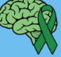
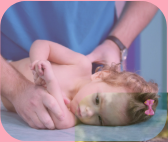
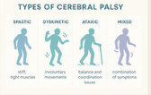
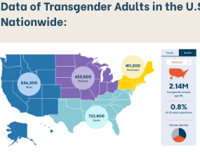
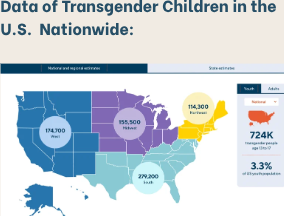

Introduction: People with cerebral palsy face high end discrimination, starting since early childhood years to even adult life. With someone facing so much hate and bullying at such a young age, one believes that they won’t be able to live a healthy and normal life. Since discrimination is linked to several health conditions whether it be physically or psychological this can affect the person on different levels. But what if we add another socially disadvantaged and poorly viewed group to the layer of cerebral palsy? Lets say, the LGBTQIA+, and for this study we have mainly focused on the transgender group and how people with cerebral palsy who identify as transgender have faced many levels of discrimination and hate due to the social constructs and views placed onto them.

Cerebral Palsy:
Cerebral Palsy is a group of brain disorders/conditions that affect body movement and basic muscle coordination. This group of conditions permanently affects body movement and muscle coordination. This condition typically forms before birth when the brain is developing. Symptoms usually appear in early infancy or preschool years and vary for each person.

Causes:
Symptoms:
Definition:
“Transgender” is a term for a person whose gender identity is different from the sex assigned at birth.
Statistics:
In the United States about 2.14 million adults identify as transgender (0.8%). About 724,000 teens (3.3%) identify as transgender.
Discrimination:
There are 245 anti-transgender bills currently in the U.S., including healthcare restrictions and criminalization of gender expression.
Health:
Research shows that some healthcare providers struggle to support transgender individuals and people with disabilities (Mulcahy et al., 2022).


Stigma Definition:
Stigma is a layered concept where differences are labeled, stereotypes are created, people are separated into groups, and discrimination leads to unequal outcomes. These layers combine to impact health, identity, and social status.
Cerebral Palsy Stigma:
One major misconception is that cerebral palsy is contagious. This is false, but it still causes isolation and misunderstanding of people with the condition.
Mulcahy et al. (2022)
CDC Cerebral Palsy Information
NINDS Fact Sheet
Williams Institute Transgender Statistics